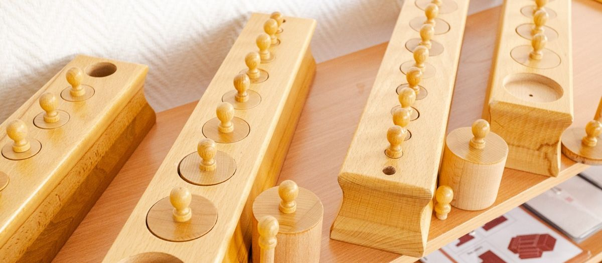

Как поступить в престижную школу Москвы: этапы отбора и подготовка

 Статью написал педагог ONE!Соколова Марина Андреевнаучитель начальных классов15 лет практики
Статью написал педагог ONE!Соколова Марина Андреевнаучитель начальных классов15 лет практики
Сильные частные школы Москвы отличаются от государственных инфраструктурой, техническими возможностями для обучения и академическими результатами. Главное, что даёт такая школа, это возможность поступить в ведущие вузы мира. Уровень обучения высокий, поэтому и к поступлению нужно готовиться. Разбираем, из каких этапов состоит отбор, что школа проверяет на самом деле и как готовить ребёнка, начиная с детского сада.

- Для государственной школы достаточно базовой грамотности. Сильная частная школа смотрит шире: знания, психологическая готовность, интеллектуальный и эмоциональный потенциал.
- Отбор это четыре встречи: собеседование с психологом, диагностика знаний, английский и разговор с родителями.
- Готовить к ним нужно не за неделю. Основу закладывает детский сад: языковая среда с 3 лет и мягкие навыки, которые развивают через игру и исследование.
01Какие требования предъявляют сильные школы
Стандартные курсы для дошкольников учат читать, писать и считать. При поступлении в государственную школу действительно нужны только эти базовые навыки. В частных школах требования другие: дети проходят несколько этапов диагностики, устной и письменной.
Специалист оценивает интеллектуальный потенциал ребёнка через способность к общению, любознательность, креативность, инициативность и эмоциональную устойчивость.
Тестирование по предметным областям: математика, логика, русский язык и чтение. Оценивается уровень ребёнка и его готовность осилить программу школы.
Если школа даёт языковую программу. В ONE! усиленная программа английского и китайского, в том числе с носителями. Дети с хорошим уровнем языка могут попасть в классы International, где часть обучения идёт на английском.
Нужна, чтобы понять атмосферу в семье и отношения детей с родителями. Семья рассматривается как единое целое и играет важную роль в образовании.
По результатам этапов принимается решение о зачислении. Приёмная комиссия смотрит на критерии и компетенции ребёнка, чтобы понять, насколько он соответствует требованиям на входе.
Вывод: сильные школы оценивают не только базовые знания, но и психологическую готовность, интеллектуальный и эмоциональный потенциал, то, что называют soft skills.
02Откуда берутся эти качества
Как развить то, что нужно ребёнку при поступлении и потом во взрослой жизни? Большую роль играет подготовка в детском саду. Государственные сады дают базовые знания и умения для стандартной программы. В детских садах ONE! внимание уделяется всестороннему развитию, и полученные навыки позволяют поступить в любую сильную школу Москвы.

03Иностранные языки с раннего возраста
Дети быстро воспринимают информацию, поэтому обучение языкам в саду особенно результативно. В три года ребёнок хорошо усваивает новое и быстро учится правильному произношению. В садах ONE! два иностранных языка.
Английский
Занятия проходят в форме игры, чтобы детям было интересно. Ребёнок в раннем возрасте не может долго концентрироваться на одном, поэтому воспитатели разнообразят обучение: малыши слушают песни на английском, а на прогулках, физкультуре и других активностях воспитатели общаются с ними на языке. Дети находятся в естественной языковой среде. Такой ребёнок приходит в школу с хорошими коммуникативными навыками, богатым словарным запасом, знанием грамматики и легче осваивает школьную программу.
Китайский
Дети учат китайский быстрее и легче, чем английский: не нужно запоминать падежи и неправильные глаголы. Иероглифы нравятся детям, поэтому они легко учатся письму. Язык мелодичный и развивает музыкальный слух. В китайском больше 80 000 иероглифов, он тренирует память и задействует оба полушария мозга, развивает ассоциативное мышление, творческие навыки и воображение.
05Как готовиться по срокам
Режим дня с 20-30 минутами занятий за столом, чтение вслух каждый день, самостоятельность в быту, кружок или секция с чужим взрослым. Полный план в статье «Подготовка к школе: пошаговый план».
Экскурсия в школу вместе с ребёнком, чтобы здание и люди стали знакомыми. Пробная диагностика: по её итогам видно, что подтянуть. Что проверяют у будущего первоклассника, в статье «Готов ли ребёнок к школе: семь признаков».
Ничего нового. Выспаться, не менять режим, не говорить при ребёнке слова «экзамен» и «комиссия». Скажите честно: «Поедем в школу, там с тобой позанимаются и посмотрят, что ты уже умеешь».
Завтрак, запас времени на дорогу, любимая вещь в кармане. После не расспрашивайте, что не получилось. Спросите, что понравилось.
Поступление в школы ONE! начинается с бесплатной диагностики знаний по математике, русскому и английскому. Экзаменов нет: по итогам диагностики семья получает отчёт с точками роста, а ребёнка определяют в подходящий класс. Для будущих первоклассников работают подготовительные классы Masters с 5 лет. Выпускники садов ONE! проходят диагностику по программе школы, её принимают в школах по всей Москве. Записаться на диагностику можно на странице диагностики.
06Частые вопросы
В большинстве нет экзаменов, есть диагностика и собеседование. Их цель определить уровень и подобрать класс.
Попросить отчёт и спросить, что подтянуть. Обычно школа предлагает подготовительный класс или повторную диагностику через несколько месяцев.
В обычный поток нет. В классы International нужен уровень, при котором ребёнок понимает педагога.
Да, при наличии мест. Первые недели за ребёнком закрепляют куратора, который помогает влиться в класс и догнать программу.
07Что дальше
Приходите на бесплатную диагностику и экскурсию в учебный день. Покажем класс, в котором будет учиться ребёнок, и дадим честный отчёт о его готовности. Запись на странице поступления или по телефону +7 (495) 152-22-21.